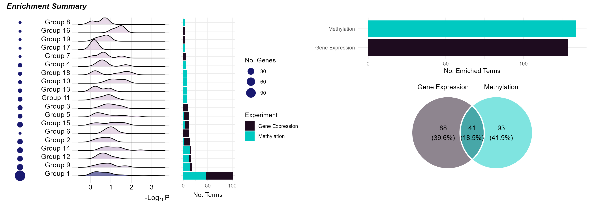
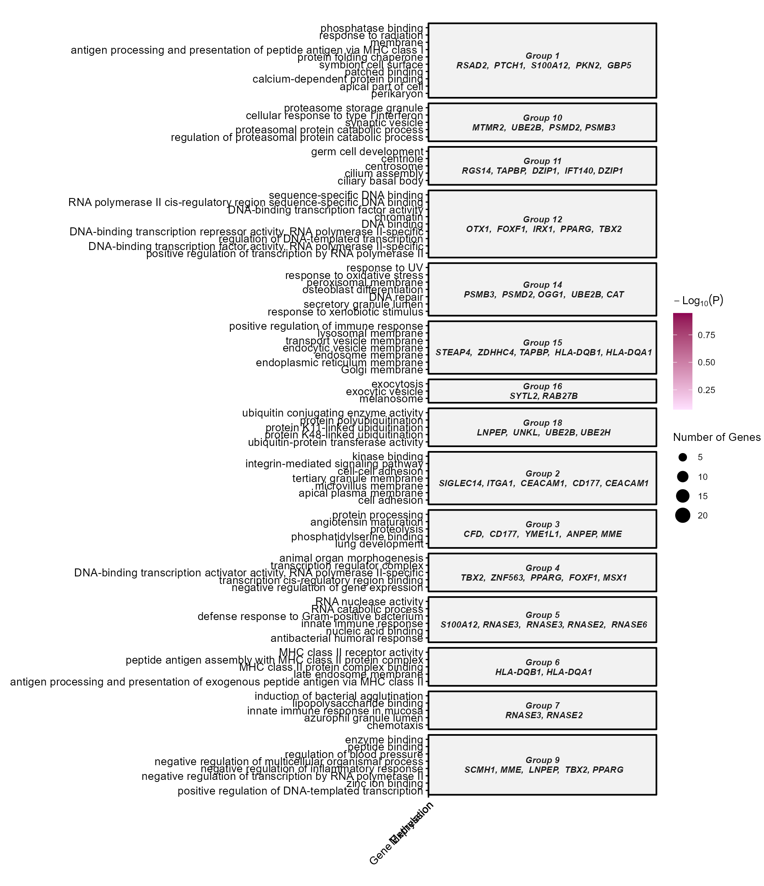
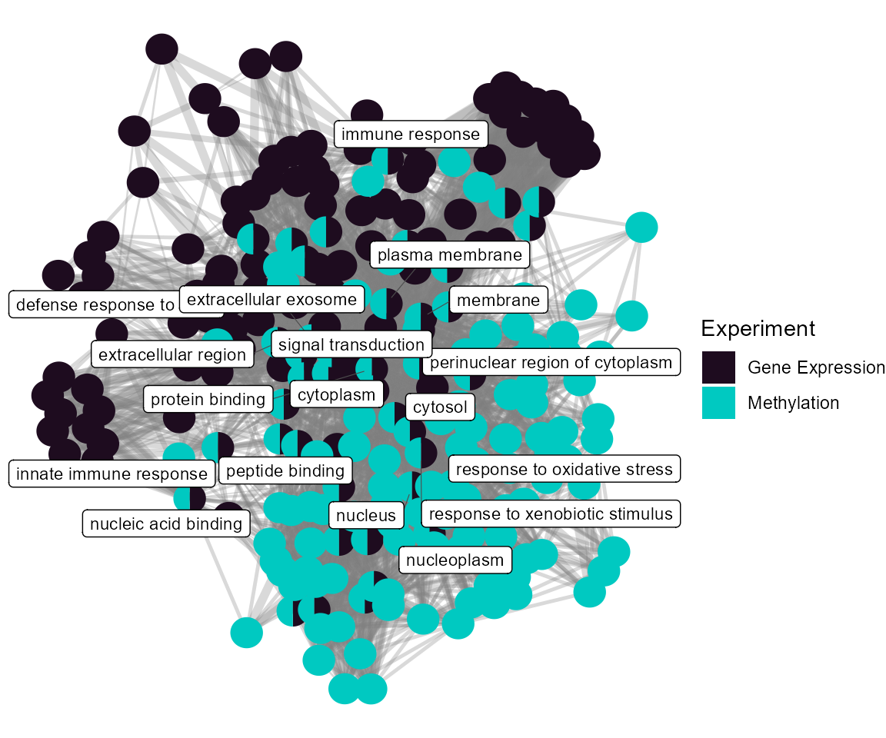
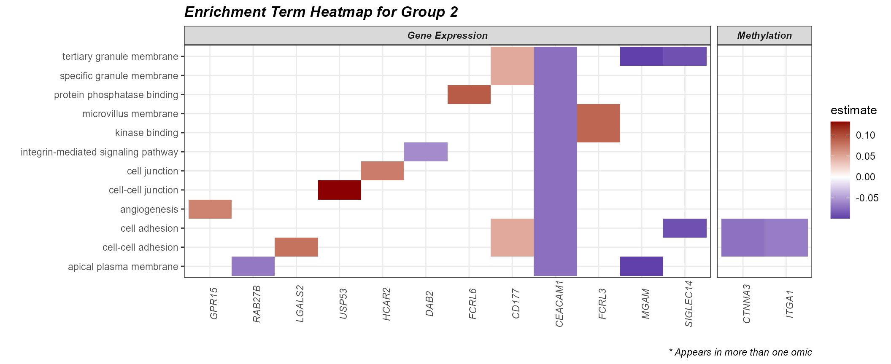
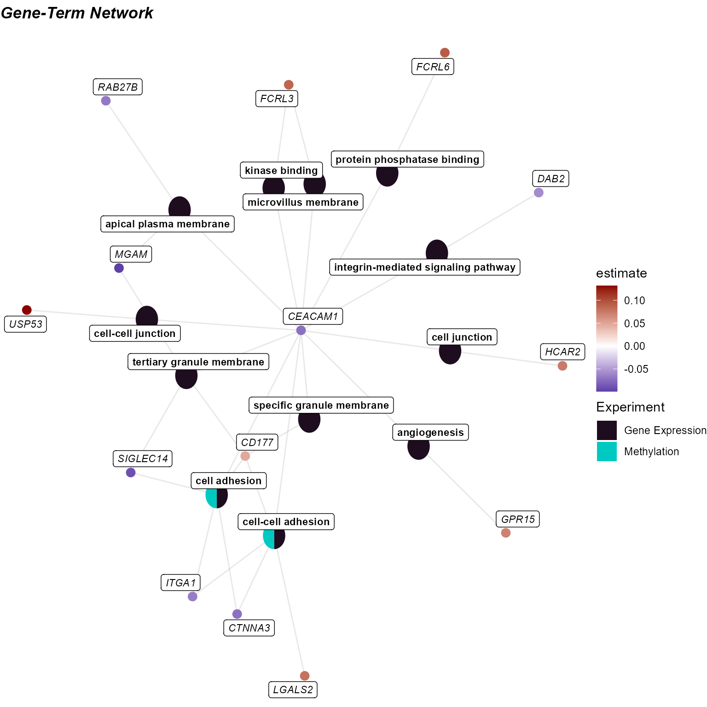

Biological Interpretation
Jason Laird
Source:vignettes/articles/biological_interpretation.Rmd
biological_interpretation.Rmd- Understand how enrichment analysis connects omics features to biological processes.
- Extract exposure-associated omics features from association results
with
extract_results. - Run Gene Ontology enrichment on exposure-associated features with
run_enrichment. - Summarize and plot enrichment results across exposure categories and omics layers.
Prerequisites
We covered omics/exposure preprocessing and exposure-omics association testing in a previous vignette. Here is the quick start code to catch you up to speed!
Click to expand code
# Load Libraries
library(tidyverse)
library(tidyexposomics)
# Load example data
data("tidyexposomics_example")
# Create exposomic set object
expom <- create_exposomicset(
codebook = tidyexposomics_example$annotated_cb,
exposure = tidyexposomics_example$meta,
omics = list(
"Gene Expression" = tidyexposomics_example$exp_filt,
"Methylation" = tidyexposomics_example$methyl_filt
),
row_data = list(
"Gene Expression" = tidyexposomics_example$exp_fdata,
"Methylation" = tidyexposomics_example$methyl_fdata
)
)
# Grab exposure variables
exp_vars <- tidyexposomics_example$annotated_cb |>
filter(category %in% c(
"aerosol",
"main group molecular entity",
"polyatomic entity"
)) |>
pull(variable) |>
as.character()
# Impute missing values
expom <- run_impute_missing(
exposomicset = expom,
exposure_impute_method = "missforest",
exposure_cols = exp_vars
)
# Check variable normality
expom <- run_normality_check(
exposomicset = expom,
action = "add"
)
# Transform variables
expom <- transform_exposure(
exposomicset = expom,
transform_method = "boxcox_best",
exposure_cols = exp_vars
)
# Run association testing between every exposure and omics feature
expom <- run_exposure_omics_association(
exposomicset = expom,
exposures = exp_vars,
action = "add"
)Biological Interpretation
This is perhaps the most difficult task in all this. Omics readouts
are almost always noisy and discovering that one consistent nugget of
biological truth is not trivial. Luckily, tidyexposomics
provides many ways of getting at biological signals. One such way is
gene ontology (GO) enrichment, which identifies processes where omics
features are over-represented.
Enrichment Analysis
Enrichment analysis tests whether a set of molecular features
(e.g. differentially abundant genes, metabolites, etc.) is
over-represented in a predefined biological process. The benefit of
grouping our exposures into categories is that we can now determine how
broad categories of exposures are tied to biological processes. The
run_enrichment function can perform enrichment analysis on
the following feature types:
degs: Differentially abundant features.degs_robust: Robust differentially abundant features from the sensitivity analysis.omics: User chosen features.factor_features: Multi-omics factor features either fromfactor_type = “common_top_factor_features”or“top_factor_features”.degs_cor: Differentially abundant features correlated with a set of exposures.omics_cor: User chosen features correlated with a set of exposures.factor_features_cor: Multi-omics factor features correlated with a set of exposures.
Here we will run enrichment analysis on omics features associated
with exposures. Specifically, we will grab omics features associated
with aerosols using the extract_results function. This
function allows us to pull any of the results we have been generating so
far. We will then filter these association results to significant
associations (p-value < 0.05) and those with the
category “aerosol”.
# Extract omics features associated with aerosols
var_map <- extract_results(
exposomicset = expom,
result = "association"
) |>
pluck("exposure_omics",
"results_df") |>
filter(p.value<0.05) |>
filter(category == "aerosol") |>
dplyr::select(
exp_name = exp_name,
variable = feature
)Now we will perform enrichment analysis and specify
feature_col to represent the column in our feature metadata
with IDs that can be mapped (i.e. gene names). We will be performing
Gene ontology enrichment powered by the fenr
package (Fenr, 2025). Note that we specify a
clustering_approach. This will cluster our enrichment terms
by the molecular feature overlap.
# Run enrichment analysis on factor features correlated with exposures
expom <- run_enrichment(
exposomicset = expom,
variable_map = var_map,
feature_type = "omics",
feature_col = "feature_clean",
db = c("GO"),
species = "goa_human",
fenr_col = "gene_symbol",
padj_method = "none",
pval_thresh = 1,
min_set = 1,
max_set = 800,
clustering_approach = "diana",
action = "add"
)Enrichment Visualizations
To visualize our enrichment results we provide several options:
dot`plot: A dot plot showing the top enriched terms. The size of the dots represents the number of features associated with the term, while the color represents the significance of the term.
cnet: A network plot showing the relationship between features and enriched terms.network: A network plot showing the relationship between enriched terms.heatmap: A heatmap showing the relationship between features and enriched terms.summary: A summary figure of the enrichment results.
Enrichment Summary
To summarize the enrichment results, we can use the
plot_enrichment function with the plot_type
argument set to summary. This will plot a summary of the
enrichment results, showing:
The number of exposure categories per enrichment term group.
The number of features driving the enrichment term group.
A p-value distribution of the enrichment term group.
The number of terms in the enrichment term group.
The total number of terms per experiment name.
The overlap in enrichment terms between experiments (i.e. between gene expression and methylation).
# Plot the summary diagram
plot_enrichment(
exposomicset = expom,
feature_type = "omics",
plot_type = "summary"
)
Here we see that it is just the features associated with “polyatomic entity” exposures that seem to be enriched. Additionally, there appears to be no overlap in terms between methylation and gene expression results.
DotPlot
By setting the plot_type to dotplot we can create a
dotplot to show which omics are associated with which terms. By
specifying the top_n_genes we can add the most frequent
features in that particular enrichment term group.
# Plot a dotplot of terms
plot_enrichment(
exposomicset = expom,
feature_type = "omics",
plot_type = "dotplot",
top_n = 15,
add_top_genes = TRUE,
top_n_genes = 5
)
Term Network Plot
We can set the plot_type to network to
understand how our enrichment terms are individually connected.
# Plot the term network plot
# Setting a seed so that the plot layout is consistent
set.seed(42)
plot_enrichment(
exposomicset = expom,
feature_type = "omics",
plot_type = "network",
label_top_n = 3
)
At the individual term level, we see that they differ by omics layer, with the gene expression driving terms related to vesicle traficking and the methylation data driving terms related to G protein-coupled receptor signaling.
Heatmap
Setting the plot_type to heatmap can help
us understand which genes are driving the enrichment terms. First we
need to create a fill_df so we know how to fill the tiles.
Here we use the median estimate
# Build the fill table
# one estimate per experiment x feature
fill_df <- extract_results(
exposomicset = expom,
result = "association"
) |>
pluck("exposure_omics", "results_df") |>
filter(
p.value < 0.05,
category == "aerosol"
) |>
reframe(
estimate = median(estimate),
.by = c(exp_name, feature)
)Now we can use this fill information to make our heatmap! Let’s see what features are driving Group 2:
# Plot a heatmap of genes and corresponding GO terms
plot_enrichment(
exposomicset = expom,
feature_type = "omics",
go_groups = "Group 2",
plot_type = "heatmap",
fill_data = fill_df,
feature_col = "feature_clean"
)
Cnet Plot
Another way to visualize this information is with the
cnet plot, where the enrichment terms are connected to the
omics features driving them.
# Plot the gene-term network
# Setting a seed so that the plot layout is consistent
set.seed(42)
plot_enrichment(
exposomicset = expom,
feature_type = "omics",
go_groups = "Group 2",
plot_type = "cnet",
fill_data = fill_df,
feature_col = "feature_clean",
)